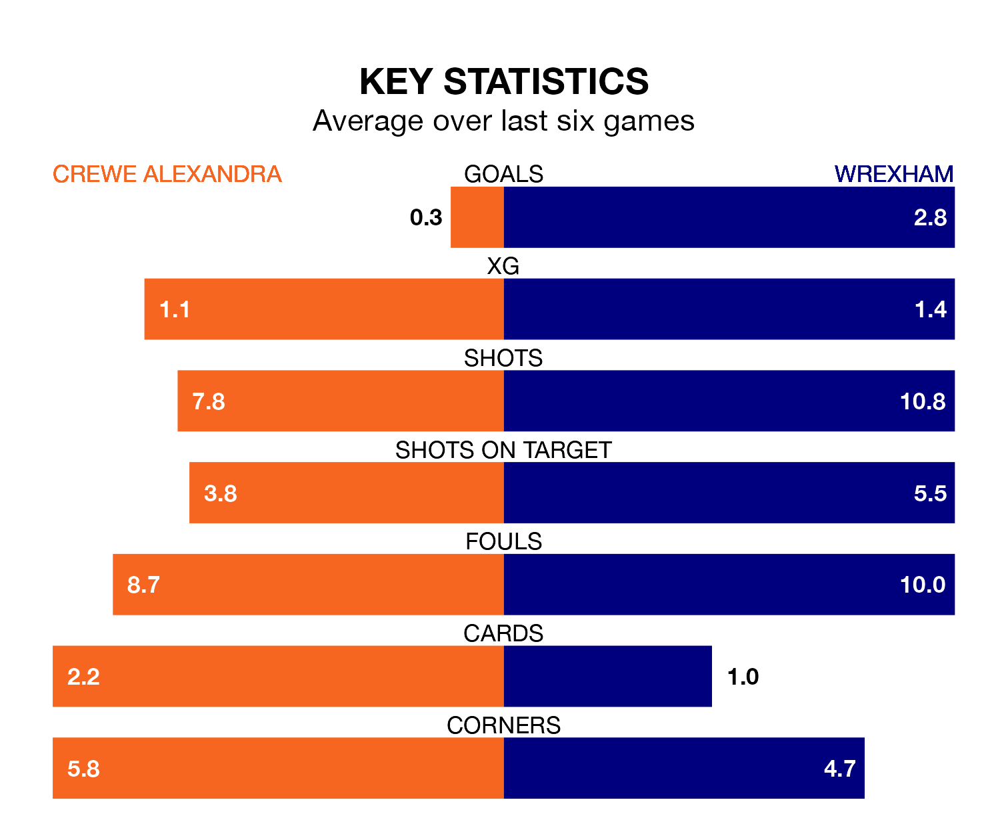

Wrexham visit Crewe Alexandra at the Mornflake Stadium on Saturday lunchtime on the back of three consecutive wins in EFL League Two.
Wrexham have picked up 15 points from their last six games, and they face a Railwaymen side who lost their last match, and have collected six points from the last possible 18.
With 84 goals in 44 games so far this season, Wrexham are scoring more than average in the league with 1.9 goals per game. And they are conceding fewer than average, letting in 51 goals at a rate of 1.2 per game.
Crewe, meanwhile, are average scorers, with 1.5 goals per game. They have conceded 1.4 goals per game.
The Dragons are third in the table after 44 games, of which they have won 24 and drawn 10, earning 82 points.
The Railwaymen are two places behind the visitors in fifth, with 19 wins and 13 draws putting them on 70 points.
In Paul Philip Mullin, Wrexham have one of the league's most on-form strikers so far this season. He has notched 23 goals in 36 appearances, to sit second in the scoring charts.
His goal rate of one every 125 minutes is quicker than that of Elliot Nevitt, the home side's top scorer with a goal every 173 minutes, and a total of 15 goals in 41 games.
Over the last two years, Crewe and Wrexham have played each other twice. Wrexham won one of them and they drew the other.
Their last meeting was on October 10, when Wrexham won 3-0 away.
Crewe's last match was on Saturday, a 3-0 loss against Grimsby Town.
Wrexham beat Forest Green Rovers 6-0 last time out, also on Saturday, with Mullin (two), Elliott Lee, Jack Marriott, Ryan Inniss (own goal) and Ryan Jack Barnett on the scoresheet.
Saturday's match will be refereed by Seb Stockbridge, who has taken charge of 11 EFL League Two games so far this season, issuing no red cards and booking 60 players. He has awarded five penalties.
The last Wrexham game Stockbridge refereed was the 2-1 win at home against Sutton United on October 24. He is yet to oversee a match featuring Crewe this season.
Updated: 15:40 (UTC), 18/04/24